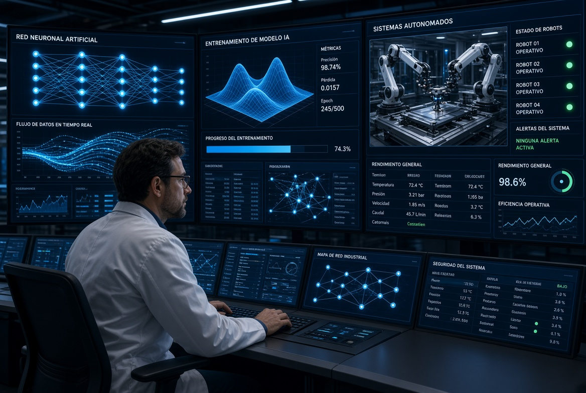

¿Que es?
La inteligencia artificial (IA) es una rama de la ciencia computacional enfocada en crear sistemas y algoritmos capaces de procesar información, aprender de patrones y tomar decisiones autónomas que imitan el razonamiento humano. Por su parte, la automatización representa el uso de sistemas tecnológicos para ejecutar tareas repetitivas o complejas sin intervención humana constante.
La convergencia de ambas disciplinas permite que las máquinas no solo ejecuten acciones programadas de manera lineal, sino que también se adapten a entornos cambiantes mediante el análisis de datos en tiempo real.
Usos Actuales
Hoy en día, la integración de la IA y la automatización abarca prácticamente todos los sectores productivos y científicos de la sociedad global.
Entre los usos actuales se encuentran los siguientes:
- Atención al cliente:Los chatbots y asistentes virtuales responden preguntas frecuentes y resuelven dudas simples de forma inmediata.
- Creación de contenido:Modelos de lenguaje y herramientas de imagen generan textos, gráficos, vídeos y código de programación básico para acelerar el trabajo creativo.
- Industria y manufactura:La automatización robótica y la visión artificial controlan la calidad en líneas de ensamblaje y realizan mantenimiento predictivo en maquinarias.
- Análisis de datos y finanzas:Los algoritmos procesan grandes volúmenes de información para detectar fraudes bancarios, evaluar riesgos de crédito y predecir tendencias de mercado.
- Salud:La IA apoya el diagnóstico médico mediante el reconocimiento de imágenes escaneadas y optimiza la gestión de historiales clínicos.
- Agricultura y logística:Sensores e imágenes satelitales procesadas con IA miden el estrés hídrico de los cultivos y optimizan las rutas de entrega de mercancías.

Beneficios
El despliegue estratégico de herramientas automatizadas impulsadas por inteligencia artificial genera múltiples ventajas operativas y económicas.
Entre los beneficios más sobresalientes se encuentran:
- Optimización de tiempos:Ejecución de tareas complejas en fracciones de segundo, reduciendo drásticamente los cuellos de botella operativos.
- Minimización de errores humanos:Mayor precisión en cálculos numéricos y procesos industriales estandarizados.
- Toma de decisiones basada en datos: Procesamiento de grandes volúmenes de información (Big Data) para prever tendencias de mercado o fallas técnicas.
- Disponibilidad continua: Operatividad ininterrumpida las 24 horas del día, los 365 días del año.
Riesgos
A pesar de sus múltiples ventajas, el avance acelerado de la inteligencia artificial y la automatización conlleva desafíos éticos, sociales y técnicos de gran relevancia.
Entre los riesgos identificados destacan los siguientes:
- Desplazamiento laboral: La automatización de puestos operativos y administrativos tradicionales genera la necesidad de una reconversión profesional profunda.
- Sesgos algorítmicos: Los modelos entrenados con datos históricos defectuosos pueden perpetuar discriminaciones o errores sistemáticos en la toma de decisiones.
- Vulnerabilidad en ciberseguridad: La alta dependencia de infraestructuras interconectadas incrementa la superficie de ataque ante posibles sabotajes informáticos.
- Privacidad de los datos: El monitoreo constante y la recolección masiva de información personal plantean dilemas éticos sobre el consentimiento y la propiedad de los datos.
Aplicaciones
Para comprender el alcance práctico de estas tecnologías en diferentes industrias, la siguiente tabla resume escenarios reales de implementación:
| Sector Tecnológico | Tecnología Aplicada | Caso de Uso Específico |
|---|---|---|
| Logística y Transporte | Machine Learning y Robótica Móvil | Gestión predictiva de flotas y vehículos autónomos de reparto en centros de distribución. |
| Fintech y Banca | Procesamiento de Lenguaje Natural | Sistemas automáticos de prevención de fraude y análisis de riesgo crediticio en milisegundos. |
| Sistemas automáticos de prevención de fraude y análisis de riesgo crediticio en milisegundos. | Sistemas de Tutoría Inteligente | Plataformas adaptativas que personalizan el ritmo de aprendizaje de acuerdo con el progreso del estudiante. |